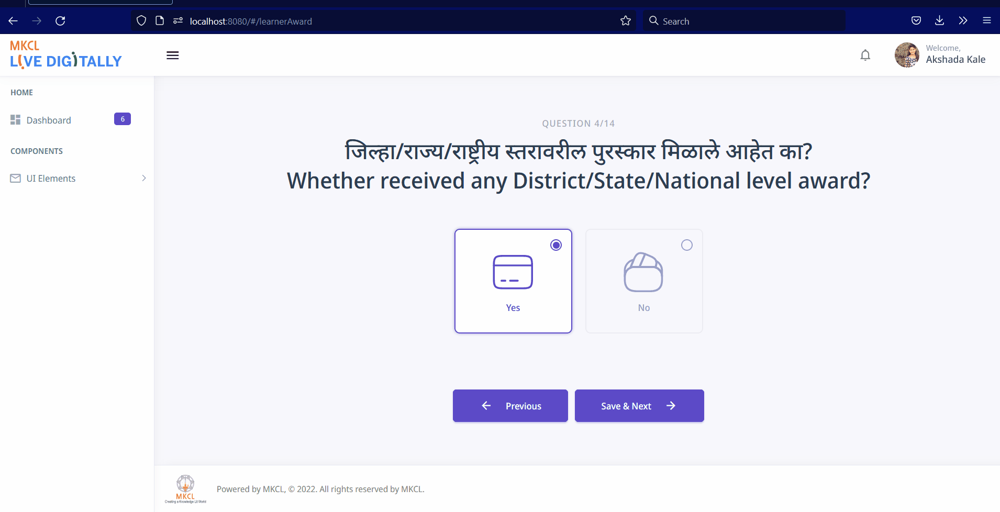

Performance Report for November 2022
Vedant Madane
1719
Work done on Live Digitally:
1. Social Profile Details Pages
2. Award Details MultiSelect
Multiselect functionality on award details page for selecting multiple awards.
Remove all instances where vSelect was used with multiselect.

2. Health & Physique Profile
Health & Physique Profile containing:
- Blood Group
- Is Disabled Person? If disabled, select Disability and enter disability percent otherwise
- Any Chronic Disease? If yes, Chronic Disease Name otherwise
- Any Genetic Disorder? If yes, Genetic Disorder Name otherwise
- Aadhaar Card Holder?
- If the user goes back and selects 'No' , corresponding values are set to null.
3. Multiselect In Agricultural Profile
VueMultiselect with :multiple toggle set to false on the following pages:
Crop Name
Crop Season
Crop Category
4. Validations on Agriculture and Social Profiles
Validations on the following pages:
LearnerAddressOnMap
AreaOfCrop
Crop Category
Crop Insurance
Crop Season
Land Holding
Own Agri Lang
Primary Source of Irrigation
Type of Agri Land
Type of Agri Land Holdings
Type of Farming
Caste
Religion
Caste Category
Is Tribal
Nationality
Weather Minority Religion
Domicile
Work done on Secure Remote Paper Delivery System:
- Issue for IFSC code search resolved on staging
- On staging, the IFSC code fetching API was being blocked due to a Content Security Policy violation.
- After the Content Security Policy issue was fixed, it caused a request to /o/mql to give an error.
- Meta tag was added to fix both issues.